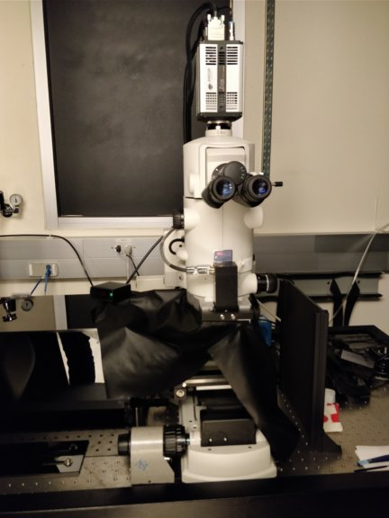

μMANAGER TUTORIAL
- What is it, what does it do?
- Where did it come from, where is it going?
- User's prespective
- Installer's perspective
- Software architecture and Extending μManager
Nico Stuurman, UCSF/HHMI, 2018 March 24
Microscope Automation Software
Grab and Store Images
Control light sources


Control Motors
User-defined order
User interface
Microscope Automation Options:
Write from scratch
Write using Toolboxes
Vendor-neutral Software
Vendor-specific Software
μManager, Key Points:
Open Source

> 100 code contributors
Community driven

Cross-platform
Mac
Windows
Extensible
Scripts
Plugins
APIs
Matlab/Python/Labview?
μManager history


Adam Douglas

Reed Kelso

Ron Vale

Nenad Amodaj
μManager's beginning
Nenad Amodaj


Supported by the Sandler Foundation
μManager timeline
Nenad Amodaj
Arthur Edelstein
μManager timeline

Henry Pinkard
Slide Explorer > μMagelan

Mark Tsuchida
Chris Weisiger
μManager Use
3 μManager publications were cited 1120 times
μManager Cool Stuff

Hari Shroff (NIH)

Jon Daniels (ASI)


Kurt Thorn, UCSF


Roy Wollman, UCLA

Doug Shepherd, Univ. Colorado, Anschutz Med. Camp.
Karl Bellve, UMass Worcester
- Open SPIM
- Jonas Ries, EMBL: High-throughput Localization microscopy
- Henry Pinkard, UC Berkeley: μMagellan, 3D, multichannel imaging of large samples
- Nico Stuurman, UCSF: Single molecule tracking and distance measurements (WE-MO20PAR-C).
μManager Support


μManager Architecture

μManager Architecture


μManager Architecture
μManager Architecture
Swig
MMCoreJ_wrap.jnilib
MMCoreJ.jar
MMCorePy.Pi
μManager UI
Matlab
Python aps
μManager Architecture
μManager top layer API - Java only
Much wider facilities than "device interaction only" MMCore
Significant changes between μManager 1.4 and μManager 2.0
Scripts interact with the MMCore API and the μManager top layer API
Thanks!

Ron Vale
Multiple generations of Vale Lab members
μManagers:
Nenad Amodaj
Arthur Edelstein
Oleksiy Danikhno
Karl Hoover
Henry Pinkard
Ziah Dean
Mark Tuschida
Chris Weisiger
Oleksiy Danikhno
Karl Hoover
Henry Pinkard
Ziah Dean
Mark Tuschida
Chris Weisiger
Many, many code and documenation contributions from scientists, enthusiasts, and companies.
μManager Community

Supported by grants from the Sandler Foundation and NIH (NIBI) R01EB007187